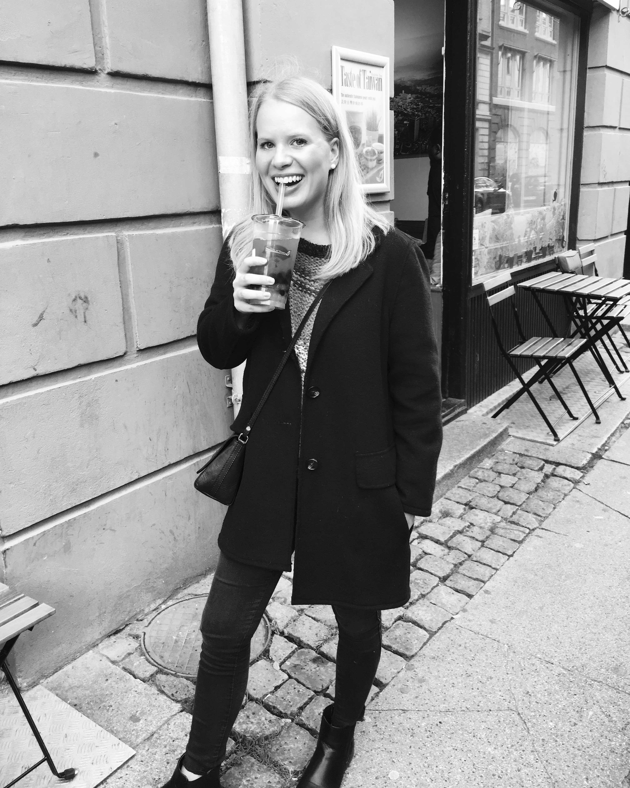

About Me
I'm a 21 year old Multimedia Designer
based in lovely Copenhagen, Denmark.
Design and creativity has been a big part of my life
since I was a little girl and my passion for it
has only become bigger as I grow older.
I particulaly love the simple expression in a design,
because it creates a pleasent athmosphere and look.
The saying “Keep it simple” is therefor
something that often will show in my designs.
I often take pictures of the landscape because you can create so many different expressions with the landscape.
